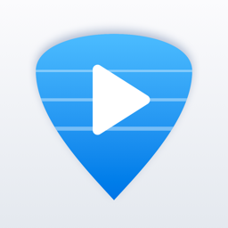

Easy GP Tabs Player
Open guitar and bass tabs on iPhone and iPad and play along: the score scrolls with a cursor, you can mute or solo parts, slow down hard passages and see every note on a fretboard or a piano keyboard.
Contact
Questions, bugs or ideas: ceofarming@gmail.com. If a file does not open or sounds wrong, please attach it and tell us your device model and iOS version.
Frequently asked questions
Which files can I open?
Guitar Pro files (.gp, .gpx, .gp5, .gp4, .gp3) and MusicXML (.musicxml, .mxl, .xml).
How do I add a tab?
Tap + in the library and pick files from the Files app, iCloud Drive or another storage provider.
You can also open a file from Safari, Mail, a messenger or AirDrop with Share › Tab Player.
The app keeps its own copy, so you can delete the original.
Where do I get tabs?
The app does not include a tab catalogue. Use files you made yourself or have the right to use.
What is free and what is Pro?
Opening and playing tabs, the cursor, notes or tabs view, the metronome, looping and muting or soloing one
track are free. Pro is a one-time purchase that removes ads and adds the fretboard and keyboard, slowing down
to 50–95% and muting or soloing any number of tracks.
I bought Pro on another device.
In the library, tap ⋯ and then Restore Purchases.
The app is silent.
Check the volume and that no track is muted (the M and S buttons under Tracks). The app plays through
the silent switch and keeps playing with the screen locked.
How do I change my ad privacy choice?
Where the law requires it, the library’s ⋯ menu has Privacy Settings. See the
privacy policy.
Guitar Pro is a trademark of Arobas Music. Easy GP Tabs Player is an independent app and is not affiliated with or endorsed by Arobas Music.